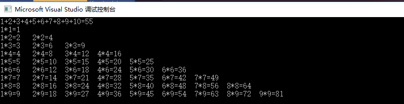
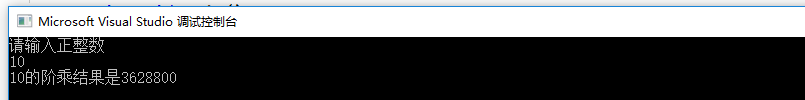

循环语句和条件语句一样都是每个程序中必不可少的，循环语句是用来完成一些重复的工作的，以减少编写代码的工作量。
C# for 循环是最常用的循环语句，语法形式非常简单，多用于固定次数的循环。
具体的语法形式如下。
for(表达式 1; 表达式 2; 表达式3)
{
表达式 4;
}
其中：
for 循环语句执行的过程是，先执行 for 循环中的表达式 1，然后执行表达式 2，如果表达式 2 的结果为 True，则执行表达式 4，再执行表达式 3 来改变循环变量，接着执行表达式 2 看是否为 True，如果为 True,则执行表达式 4，直到表达式 2 的结果为 False，循环结束。
提示：在 for 循环中表达式 1、表达式 2、表达式 3 以及表达式 4 都是可以省略的，但表达式 1、表达式 2、表达式 3 省略时它们之间的分号是不能省略的。
using System;
using System.Collections.Generic;
using System.Text;
namespace Kingtest02
{
class Fortest
{
static void Main(String[] args)
{
Fortest Fortest = new Fortest();
Fortest.Sum();
Fortest.Factorial();
}
public void Sum()//计算1到10的和
{
int a = 0;
for (int i = 1; i < 11; i++)
{
if (i == 10)
{
Console.Write(i + "=");
a = a + i;
}
else
{
Console.Write(i + "+");
a = a + i;
}
}
Console.WriteLine(a);
}
public void Factorial()//99乘法口诀
{
for (int i = 1; i < 10; i++)
{
for (int j = 1; j <= i; j++)
{
Console.Write(j + "*" + i + "=" + j * i + "\t");//\t是转义字符（制表符），如果不使用转义字符\t，则结果显示比较乱
}
Console.WriteLine();
}
}
}
}
计算阶乘
void for123()
{
int num, result;
result = 1;
Console.WriteLine("请输入正整数");
num = Convert.ToInt32(Console.ReadLine());
for (int i = 1; i <= num; i++)
{
result = i * result;
}
Console.WriteLine("{0}的阶乘结果是{1}", num, result);
}